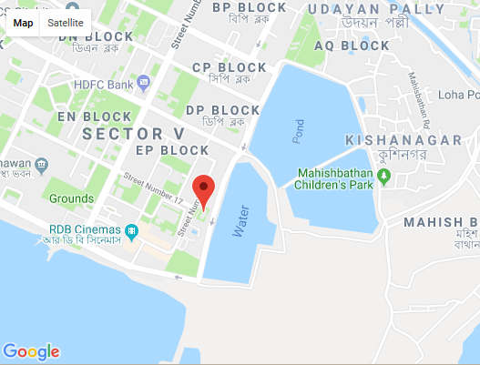
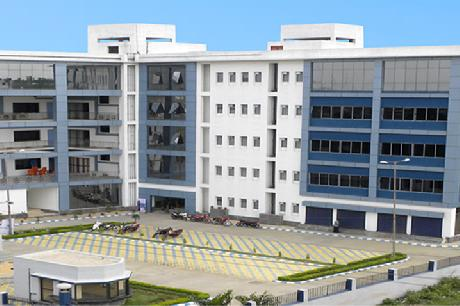

Home

About_Us |

Online_Admission |

Online_Videos |

Course |

Contact_Me |
About Us...
Webel Informatics Limited (WIL) is the IT Education and Training arm of West Bengal Electronics Industry Development Corporation Limited (WBEIDC), Govern- ment of West Bengal Undertaking. Since 1992, WIL has trained around 20000 industry ready professionals, every year, from its own classrooms, 125+ Franchise locations all over the state, and through Corporate Training.
WIL'S IT Education and Training division conducts Diploma and Certificate courses in Software, Hardware, Networking and Multimedia, besides a host of IT courses for beginners, special emphasis is given for training college students, to ready them for professional placement on graduation.
WIL is th e Regional CISCO Network Academy for Eastern India and provides training of Cisco Certified Network Associ- ate (CCNA). It also conducts Redhat Certified Engineer (RHCE) & Redhat Certified Security Specialist (RHCSS) for individuals and Corporate Clients. WIL was selected best CISCO Local Network- ing Academy for the year 2007.

